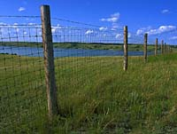
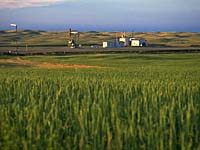

<!DOCTYPE HTML PUBLIC "-//W3C//DTD HTML 3.2 Final//EN">
<html>

<head>

<title>Environment: Ecoregions: Moist Mixed Grassland</title>

<meta name="Author-Corporate" content="GlobalED Multimedia Inc.">
<meta name="Author-Web" content="Lindsay Blair/Jeff Bettany">
<meta name="Author-Photography" content="Lindsay Blair">
<meta name="Author-Text" content="Saskatchewan Ecoregions Project">
<meta name="Author-Editing" content="Lindsay Blair">
<meta name="Publisher" content="Lindsay Blair/Jeff Bettany">
<meta name="Content-Language" content="en-CA">
<meta name="Coverage" content="Worldwide">

	
<!-- # # # # # # JAVASCRIPT SOURCE FILE # # # # # # -->

<script language="JavaScript">
<!--
//check if image object is supported, then preload images
        
        if (document.images) {
  		
  		IndexImg = new Image();
  			IndexImg.src = "../../media/stuff/si_icon1.jpg";
  			IndexImg_on = new Image();
  			IndexImg_on.src = "../../media/stuff/si_icon2.jpg";
  		SearchImg = new Image();
  			SearchImg.src = "../../media/stuff/search1.jpg";
  			SearchImg_on = new Image();
  			SearchImg_on.src = "../../media/stuff/search2.jpg"; 
  		TopImg = new Image();
  			TopImg.src = "../../media/stuff/qk_top1.jpg";
  			TopImg_on = new Image();
  			TopImg_on.src = "../../media/stuff/qk_top2.jpg"; 
  		GlosImg = new Image();
  			GlosImg.src = "../../media/stuff/glossary.gif";
  			GlosImg_on = new Image();
  			GlosImg_on.src = "../../media/stuff/glossary2.gif"; 
  		PrevImg = new Image();
  			PrevImg.src = "../../media/stuff/qk_prev1.jpg";
  			PrevImg_on = new Image();
  			PrevImg_on.src = "../../media/stuff/qk_prev2.jpg"; 
   		NextImg = new Image();
  			NextImg.src = "../../media/stuff/qk_next1.jpg";
  			NextImg_on = new Image();
  			NextImg_on.src = "../../media/stuff/qk_next2.jpg"; 
		QuickImg = new Image();
  			QuickImg.src = "../../media/stuff/qk_link1.jpg";
  			QuickImg_on = new Image();
  			QuickImg_on.src = "../../media/stuff/qk_link2.jpg"; 


// LOAD MODULE STRIP BUTTON IMAGES
  
   	EnvImg = new Image();
  		EnvImg.src = "../../media/stuff/h3_environment1.jpg";
  		EnvImg_on = new Image();
  		EnvImg_on.src = "../../media/stuff/h3_environment2.jpg"; 
    RegionImg = new Image();
  		RegionImg.src = "../../forestry/nav/h3_eco.gif";
  		RegionImg_on = new Image();
  		RegionImg_on.src = "../../forestry/nav/h3_eco2.gif"; 
 		
  		
  		
         }
// function to change images to hi_on state
function hi_on(imgName) {
        if (document.images) {
            document[imgName].src = eval(imgName + "_on.src");
        }
}
// function to change images to hi_off state
function hi_off(imgName) {
        if (document.images) {
            document[imgName].src = eval(imgName + ".src");
        }
}
// -->
</script>

</head>
	
<!-- # # # # # # BACKGROUND MARGIN # # # # # # -->

	<body background="../../media/stuff/bg_en1.jpg" bgcolor="#FFFFFF" 	
	text="#000000" link="#1111FF" alink="#000000" vlink="#CCCC66">

<!-- # # # # # # # # # # MASTERTABLE BEGIN # # # # # # # # # # -->

<table width="600" border="0" cellpadding="3" cellspacing="0">
<tr>
<td valign="top" width="128">

<!-- #### COLORMARGIN NAVIGATION #### -->

<!------ SI-HOMEPAGE BUTTON ------>

	<a href="../../index.html" 
	onmouseout="hi_off('IndexImg')" 
	onmouseover="hi_on('IndexImg')">
	</a> 

<!------ ENVIRONMENT BUTTON ------>
	
	<a href="../index.html" 
	onmouseout="hi_off('EnvImg')" 
	onmouseover="hi_on('EnvImg')">
	</a> 

<!------ ECOREGIONS BUTTON ------>
	
	<a href="./index.html" 
	onmouseout="hi_off('RegionImg')" 
	onmouseover="hi_on('RegionImg')">
	</a> 



<!-- QUICKLINKS BUTTON -->
	<a href="../../misc/quickmain.html" 
	onmouseout="hi_off('QuickImg')" 
	onmouseover="hi_on('QuickImg')">
	</a> 
<p>

<font size="-1">
<a href="#climate">Climate</a><br>
<a href="#land">Landscape</a><br>
<a href="#soil">Soil</a><br>
<a href="#vegetation">Vegetation</a><br>
<a href="#wildlife">Wildlife</a><br>
<a href="#humans">Human Use</a>
</font>
<p>
<embed src="../../media/audio/ambient/frogs.mov" PLUGINSPAGE="http://quicktime.apple.com" WIDTH=33 HEIGHT=16 CONTROLLER=playbutton LOOP=false AUTOPLAY=false>

</td>

<!-- #### COLORMARGIN NAVIGATION END #### -->

<!-- #### BLANKGUTTER #### -->

<td width="20">
</td>

<!-- ################ CONTENT BEGIN ################ -->

<td valign="top" width="100 percent">

<!-- ################ PAGETOP ################ -->

<a name="pagetop"></a>

<!-- MAIN TITLE -->



<!--PICSTRIP -->



<!--ECOREGION MAP -->

<p>

<!-- ########## CONTENT COLUMN ########## -->
<table>
<td width="440" valign="top">

<b><a name="climate">Climate:</a></b>
<p>

<table border=0 cellspacing=0 cellpadding=0>

<tr><td><dd><table border=0 cellpadding=2 cellspacing=0>
<tr><td width= 220>Total annual precipitation (mm)</td>
<td align=right><b>380</b></td></tr>
<tr><td width= 220>Annual snowfall (cm)</td>
<td align=right><b>110</b></td></tr>
<tr><td width= 220>Water deficit (mm)</td>
<td align=right><b>425</b></td></tr>
<tr><td width= 220>Mean July temperature (C)</td>
<td align=right><b>+18.8</b></td></tr>
<tr><td width= 220>Mean January temperature (C)</td>
<td align=right><b>-17.9</b></td></tr></table><p><tr><td  valign=top><br>

<form>
<input type="button" name="Button1" value="hi-res image"
	onclick="window.open
	('../../media/stills/misc/winter/winter06.jpg','bigwindow','toolbar=no,location=no,directories=no,scrollbars=yes,resizable=yes,status=yes,')">
</form><br><p>



The climate is dry and warm marked by short, warm summers and
long, cold winters. The weather is variable.
</td></tr></table>



<p>
<b><a name="land">Landscape:</a></b>
<br>
<table border=0 cellspacing=0 cellpadding=0>
<tr><td  valign=top><br>

<form>
<input type="button" name="Button1" value="hi-res image"
	onclick="window.open
	('../../media/stills/tourism/prov_parks/buffalo_pound_pk/bison02.jpg','bigwindow','toolbar=no,location=no,directories=no,scrollbars=yes,resizable=yes,status=yes,')">
</form><br><p>Associated with rougher morainic deposits
are numerous small sloughs and ponds. The region slopes gently
eastward, drained by the Saskatchewan Qu'Appelle and Souris rivers
which link a number of lakes and tributaries.
</td></tr></table>



<p>

<center>
<br>
GPS: 51d 53.24m N, 106d 30.94m W, 1609 feet<br>29 July 96, 11:30 am, Fuji Velvia 50, F8 1/125s<br>
<embed width=300 height=192 vspace="4"  src="../../media/qtvr/300x192/sage_bush_3.mov"><br>
This QTVR was shot 25 kms south of Saskatoon on #11.<br>
<form>
<input type="button" name="Button1" value="220k QTVR 500x300"
	onclick="window.open

('../../media/qtvr/450x300/sage_bush_2.mov','bigwindow','toolbar=no,location=no,directories=no,scrollbars=yes,resizable=yes,status=yes,')">
<input type="button" name="Button1" value="780k QTVR 640x480"
	onclick="window.open
('../../media/qtvr/640x480/sage_bush.mov','bigwindow','toolbar=no,location=no,directories=no,scrollbars=yes,resizable=yes,status=yes,')">
</form><br><p>
</center><p>

<center>
<br>
GPS: 53d 05.19m N, 108d 20.75m W, 1906 feet<br>03 July 96, 6:15 pm, Fuji Velvia 50, F8 1/60s<br>
<embed width=300 height=192 vspace="4"  src="../../media/qtvr/300x192/lighthouse_3.mov"><br>
Although the lighthouse serves no real seafaring purpose,<br>
it is an interesting landmark with a spectacular view<br>
of both Cochin and Jackfish lakes.<br>
<form>
<input type="button" name="Button1" value="220k QTVR 500x300"
	onclick="window.open

('../../media/qtvr/500x300/lighthouse_2.mov','bigwindow','toolbar=no,location=no,directories=no,scrollbars=yes,resizable=yes,status=yes,')">
</form><br><p>
</center><p>
<center>
<br>
GPS: 50d 33.76m N, 104d 43.43m W, 1936 feet<br>29 July 96, 2:20 pm, Fuji Velvia 50, F8 1/125s<br>
<embed width=300 height=192 vspace="4"  src="../../media/qtvr/300x192/condie_c.mov"><br>
Condie Nature Refuge, 15 kms northwest of Regina.
<form>
<input type="button" name="Button1" value="220k QTVR 500x300"
	onclick="window.open

('../../media/qtvr/450x300/condie_b.mov','bigwindow','toolbar=no,location=no,directories=no,scrollbars=yes,resizable=yes,status=yes,')">
<input type="button" name="Button1" value="780k QTVR 640x480"
	onclick="window.open
('../../media/qtvr/640x480/condie.mov','bigwindow','toolbar=no,location=no,directories=no,scrollbars=yes,resizable=yes,status=yes,')">
</form><br><p>
</center><p>
<center>
<br>
GPS: 51d 24.99m N, 105d 08.23m W, 1546 feet<br>17 July 96, 4:45 pm, Fuji Velvia 50, F8 1/100s<br>
<embed width=300 height=192 vspace="4"  src="../../media/qtvr/300x192/last_mtn_area_c.mov"><br>
Last Mountain Lake Wilderness Area,<br>1 km north of Govan and 7 kms west.
<form>
<input type="button" name="Button1" value="220k QTVR 500x300"
	onclick="window.open

('../../media/qtvr/450x300/last_mtn_area_b.mov','bigwindow','toolbar=no,location=no,directories=no,scrollbars=yes,resizable=yes,status=yes,')">
<input type="button" name="Button1" value="780k QTVR 640x480"
	onclick="window.open
('../../media/qtvr/640x480/last_mtn_area.mov','bigwindow','toolbar=no,location=no,directories=no,scrollbars=yes,resizable=yes,status=yes,')">
</form><br><p>
</center><p>
<b><a name="soil">Soil:</a></b>
<br>
<table border=0 cellspacing=0 cellpadding=0>
<tr><td  valign=top><br>

<form>
<input type="button" name="Button1" value="hi-res image"
	onclick="window.open
	('../../media/stills/agriculture/crops/grain_bins31.jpg','bigwindow','toolbar=no,location=no,directories=no,scrollbars=yes,resizable=yes,status=yes,')">
</form><br><p>The area is a level to rolling lacustrine and morainic plain.
Dark brown, well drained soils predominate.
</td></tr>
</table>


<br>

<p>
<b><a name="vegetation">Vegetation:</a></b>
<br><table border=0 cellspacing=0 cellpadding=0>
<tr><td  valign=top><br>

<form>
<input type="button" name="Button1" value="hi-res image"
	onclick="window.open
	('../../media/stills/misc/plants/sage03.jpg','bigwindow','toolbar=no,location=no,directories=no,scrollbars=yes,resizable=yes,status=yes,')">
</form><br><p>The native vegetation of this area consists of a variety of grasses
and herbs. Speargrass and wheatgrass dominate along with a variety
of deciduous shrubs including
buckbrush, chokecherry, wolf willow and saskatoon. The most common
herb is pasture sage (shown left). Western cottonwoods occur along river valleys
in the western part of the ecoregion. Small stands of <a href="../../forestry/tree/sask_trees.html#trembling_aspen" target="bigwindow">aspen</a>
 can also be found in areas
where the ground water is near the surface.
</td></tr></table>



<p>
<b><a name="wildlife">Wildlife:</a></b>
<br>
<table border=0 cellspacing=0 cellpadding=0>
<tr><td  valign=top><br>

<form>
<input type="button" name="Button1" value="hi-res image"
	onclick="window.open
	('../../media/stills/misc/birds/sharp_tail_grouse.jpg','bigwindow','toolbar=no,location=no,directories=no,scrollbars=yes,resizable=yes,status=yes,')">
</form><br><p>White-tailed <a href="../../media/stills/misc/animals/deer02.jpg" target="bigwindow">deer</a>, mule deer, pronghorn antelope, coyote, <a href="../../media/stills/misc/animals/bunny01.jpg" target="bigwindow">rabbits</a>
and ground squirrels are common in this ecoregion. Sharp-tailed
grouse (shown left) and non-native grey partridge are quite plentiful. The
introduced ring-necked pheasant may be found along drainages.
Native songbirds such as Baird's sparrow and vesper sparrow are
characteristic to this area. Prairie potholes provide habitat
for waterfowl and of course <B>frogs</B>(Check out the sound at the top).
</td></tr>
</table>

<p>
<b><a name="humans">Human Use:</a><br>
<br><table border=0 cellspacing=0 cellpadding=0>
<tr><td  valign=top><br>

<form>
<input type="button" name="Button1" value="hi-res image"
	onclick="window.open
	('../../media/stills/mining_energy/oil_gas/gas_field01.jpg','bigwindow','toolbar=no,location=no,directories=no,scrollbars=yes,resizable=yes,status=yes,')">
</form><br><p>Farming and ranching are the
primary land uses. The natural environment is also used for outdoor
recreation. Mining activity includes
the extraction of oil, gas, potash and coal.
</td></tr></table>

<!--Human Use End-->

</td>

<!-- ########## CONTENT END ########## -->

</table>

<!-- # # # # # # # # # # BOTTOM NAV BUTTONS # # # # # # # # # # -->

<tr><td>

<!-- PAGETOP JAVASCRIPT NAVIGATION -->

	<a href="#pagetop" 
		onmouseout="hi_off('TopImg')" 
		onmouseover="hi_on('TopImg')">
	</a>
</td>
<td></td>
<td>

<!-- PAGEPREV JAVASCRIPT NAVIGATION -->

		<a href="./eco_aspen_park.html"
		onmouseout="hi_off('PrevImg')" 
		onmouseover="hi_on('PrevImg')">
	</a>

<!-- PAGENEXT JAVASCRIPT NAVIGATION -->
	
		<a href="./eco_mix_grass.html" 
		onmouseout="hi_off('NextImg')" 
		onmouseover="hi_on('NextImg')">
	</a>
	
<!-- # # # # # # # # # #BOTTOM NAV END # # # # # # # # # # -->

</td></tr>
</td></tr>
</table>

<!-- # # # # # # # # # # MASTERTABLE END # # # # # # # # # # -->

</body>

</html>
